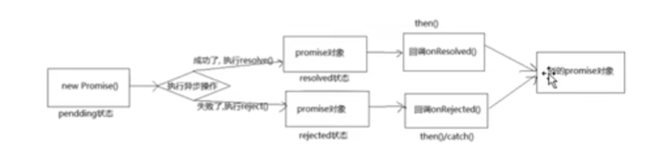

Promise
Back Homepage-
Introduction
- 支持异步操作比如fs文件操作, 数据库操作, AJAX以及定时器等等
- 代替旧的回调函数方案
- 链式回调, 避免回调地狱
- 是一个构造函数, 可以用new来进行实例化
结果为:
-
Promise
- 
- 实例化的时候传入一个函数
- 有两个形参resolve reject
- 都是函数类型的参数, 成功的时候调用resolve, 失败的时候调用reject
- 调用promise.then()方法传入两个方法, 分别对应成功和失败的时候的回调函数
- .then()方法也有返回值, 返回一个promise对象, 返回状态
- 抛出异常throw的时候返回失败
- return 非promise对象: 成功且返回什么result就是什么
- return 一个Promise对象: 返回什么就是什么
- 任务串联:
- resolve() 和 reject()可以传入参数, 在.then()处理结果时接收
- 多次调用.then()方法, 状态改变后都会执行
- promise.catch(reason=>{clg(reason)})只能指定失败的回调
- 改变状态和执行回调都可能先发生, 一般先改变状态, 但执行器函数当中是一个异步任务的时候就会先执行回调
- 回调的执行一定在状态改变之后
-
promise.resolve()
- 传入一个非promise对象, 返回成功的结果的promise对象
- 传入promise对象, 跟正常一样, 参数的结果决定返回结果成功或者失败
-
promise.reject()
- 返回一个失败的promise对象
- promiseResult可以是一个成功的Promise对象
-
promise.all([p1, p2, p3, ...])
- 传入一个promise的数组, 传入的数组都成功的话, 返回成功结果组成的数组
- 有失败的话返回失败的结果
-
promise.race([p1, p2, p3, ...])
- 传入一个promise的数组, 返回第一个返回的promise对象的结果
-
utils.promisify
- 将回调风格的函数转为promise风格的函数
- 比如const newReadFile = util.promisify(fs.readFile)
然后就可以newReadFile(fPath).then()
-
状态改变
- 实例对象的属性promiseState: pending resolved/fulfilled rejected
- 只能是pending变成resolved或rejected
- 属性promiseResult保存异步任务成功或者失败的结果[data/err]
- 调用resolve()函数可以将pending变为fulfilled
- 调用reject()函数可以将pending变为rejected
- 使用throw关键字 throw xxx;抛出错误信息
-
问题
- 异常穿透, 连续调用.then()函数且不处理异常, 最后调用.catch()函数可以处理所有发生的异常
- 中断Promise链: 返回一个pending状态的Promise对象 return new Promise(()=>{}), 后面的就都不会执行了